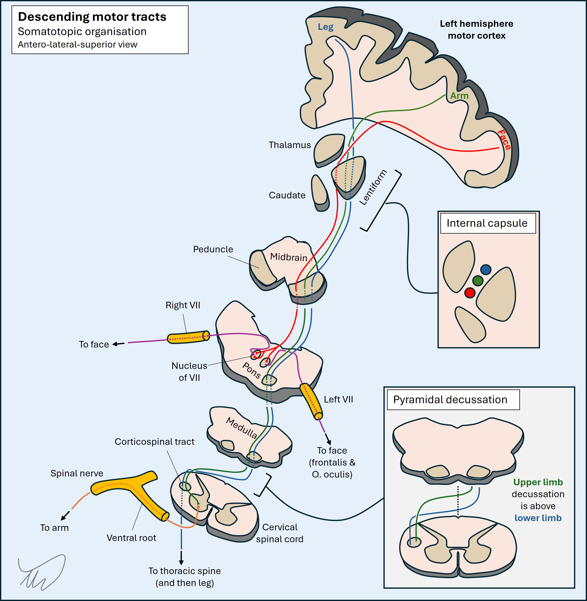
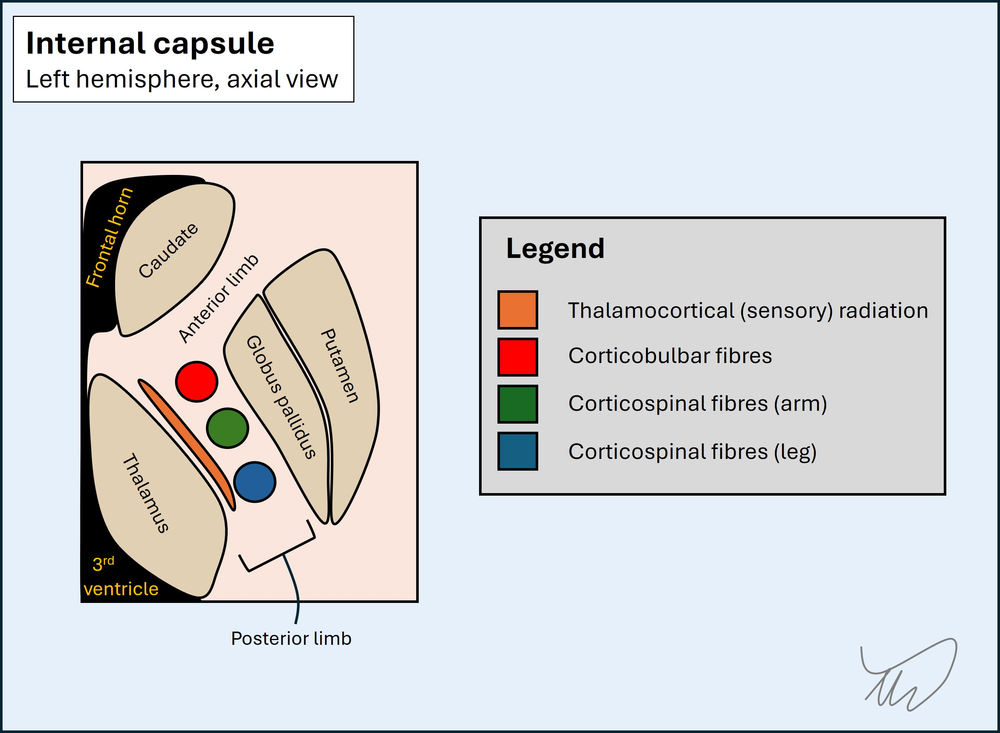
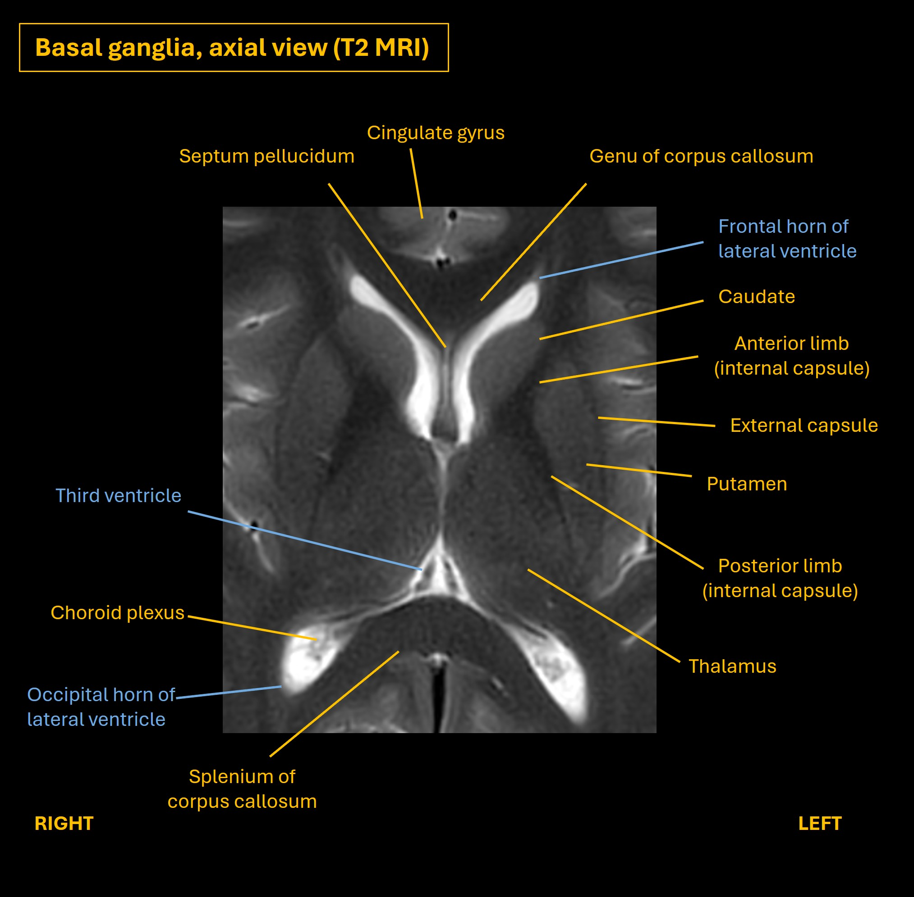
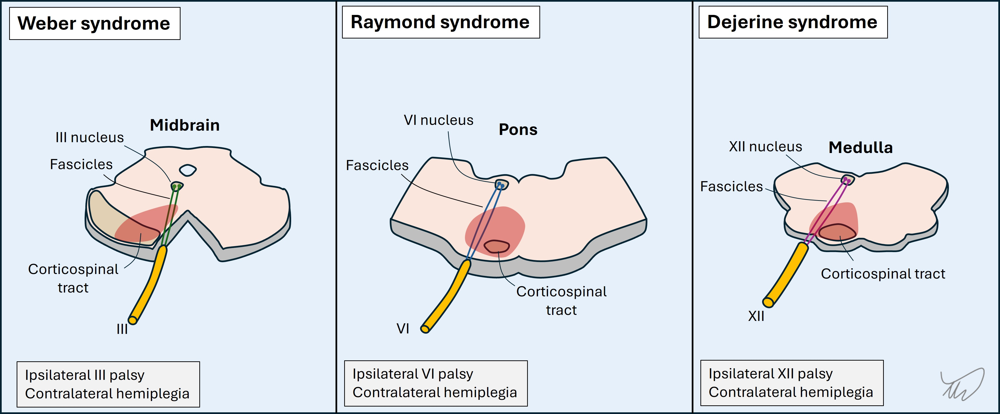
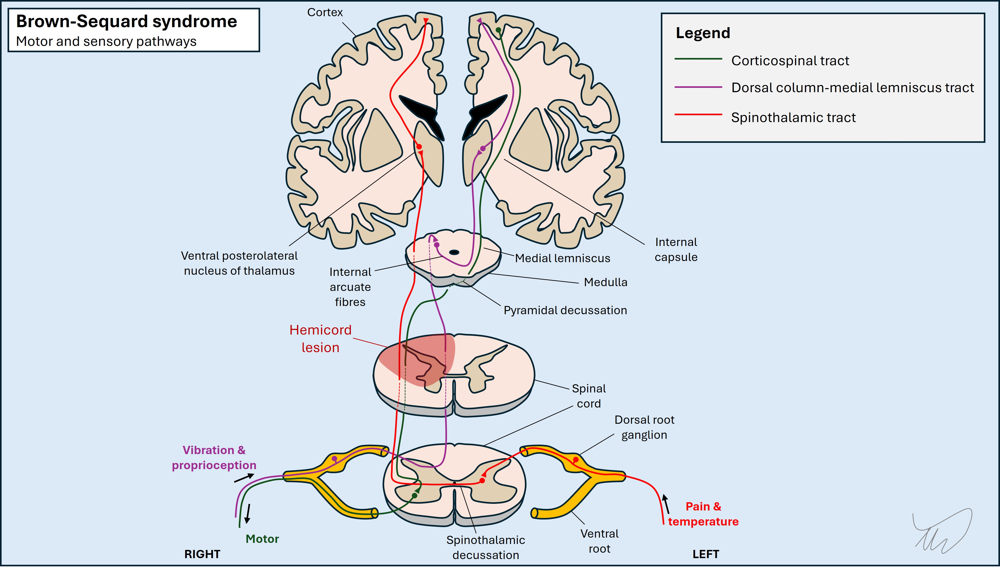

Case 9. Weakness and tingling
Where is the lesion?
The symptoms and signs are right arm and leg weakness and sensory alteration. It’s too diffuse, and too unilateral, to be a peripheral nervous system lesion - total hemi-body sensory and motor disturbance is not seen in peripheral lesions - so it must be central.
If the right side of the face were involved we’d know this was a brain lesion, but it’s spared - so this broadens things a little, leaving three options: brain, brainstem or cervical spine
Brain – cortex, corona radiata and capsuleCortex
The cortex is not impossible - but this would need to be a large lesion, affecting the pre- and post-central gyri given the motor and sensory features, and would possibly also affect other structures, for example causing dysphasia or a visual field defect (as is seen in large middle cerebral artery strokes). It would make more sense for this to affect the corticospinal and sensory tracts somewhere they are more closely packed together given the broad body regions affected.
Subcortical regionsA subcortical lesion in the corona radiata is possible, where the motor fibres descend from the cortex and the sensory fibres ascend towards it. A lesion might affect the more medial fibres, sparing the face.

Internal capsule
The internal capsule seems even more plausible. It is a narrow space surrounded by deep grey matter nuclei (caudate and thalamus medially, lentiform nucleus laterally). Lots of tracts ascend or descend through it. It’s shaped like a boomerang pointing towards the medial aspect of the brain. The apex is the genu ('knee') and it has two limbs either side of this (anterior and posterior).


The corticospinal tract travels through the posterior limb, and is organised with the fibres to the leg passing at the most posterior aspect, with the fibres to the trunk and arm passing anterior to these. The corticobulbar fibres (to the face and mouth) pass next to the genu. A lesion in the posterior aspect of the capsule could therefore spare the face if far back enough.
The sensory fibres also pass from the thalamus upward via the superior thalamic radiation through the posterior limb on their way to the parietal lobe sensory cortex, and could be affected. Some capsular lesions cause motor-only presentations, others sensory-only - but some can affect both. A capsular lesion is possible here.
BrainstemIt is possible for a brainstem lesion to affect contralateral sensation and motor function in isolation - but this is unusual given how many other structures pass through the brainstem and the fact that the motor pathways to the face and the body travel together, at least until the pons.
In a rostral brainstem lesion affecting the cerebral peduncle (anterior midbrain) there is often facial weakness due to corticobulbar fibres also being affected alongside corticospinal ones. A peduncle lesion a little off-centre could potentially affect the limb fibres only, but this is unusual.
In lower parts of the brainstem other features are seen – the typical pattern arising is combination of an ipsilateral cranial nerve lesion with contralateral sensorimotor deficits. The diagram below includes several eponymous examples. The ones that involve the corticospinal tracts are quite central, so the usual cranial nerve fascicles affected are motor - whether to eye movements or tongue - as they pass quite medially through the anterior brainstem, next to the corticospinal tracts.

The fact that this is a purely limb presentation and there is nothing cranial associated makes a brainstem lesion a less likely candidate here.
Unilateral spinal lesions can produce hemibody sensorimotor abnormalities. However, given the different crossing points of the various tracts, then if sensory abnormalities co-occur with weakness, they may be on the opposite side of the body, depending which tracts are involved.
The spinothalamic tract decussates on entry. It is placed very near the corticospinal tract - just anterior to it in the lateral cord. A right hemicord lesion would produce left spinothalamic modality sensory loss in the limbs, with right-sided weakness. If it also involved the dorsal column pathway on that side there will be right-sided loss of touch, vibration and proprioceptive sensations.

However, this patient has pinprick sensory loss on the same side as the weak limb – so a cord lesion does not fit. This is one of the reasons testing pinprick sensation is so vital as well as touch – if lost on the same side as a weak limb, the lesion is probably not in the spine. If we just test touch sensation we lose out on the opportunity for this information.
SummaryThis sounds like a left hemispheric lesion somewhere between the corona radiata and the brainstem - and the best candidate is the posterior limb of the internal capsule.
What is the lesion?